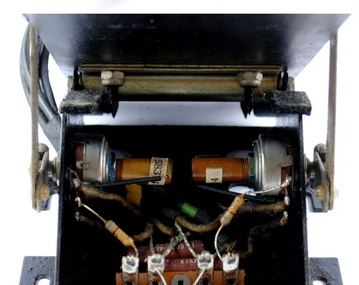

50 year old Conn Serenade Model 632 Type 002
My next project I think... and this thing is smooth. I've yet to take some readings and determine my best approach... but it has two (assuming/to be determined logarithmic) pots and will be a welcome addition/upcycle.
Swell pedal from an organ
timeorspace
#1
{kind=link}
timeorspace
#3
I'll dig into it more... I think I might have a schematic, not sure. Something tells me one channel is always dry (>amp) and the other wet (effects>amp).
timeorspace
#4
@Gavin no adjustment... two pots under the pedal. They are unique 4 pole pots. I'll know more soon and share my findings.
timeorspace
#5
@Gavin it appears the extra pots (as they describe) affect the angular velocity? I'm no electronics whiz but reading below, and looking at this pair of 'dual pots in one' and the wiring, I think the second 'set' of pots 'kick in' during the middle of the swell. Unfortunately my service manual (free since I'm cheap) does not have a complete set of schematics as I'm missing 'foldout schematic, Figure 84' they mention. I only have a multimeter but I think taking individual and then paired readings should give me some indications before connecting it to something to log some results. Apparently they are 50K pots.

{kind=link}
Gavin
#6
Seems interesting indeed. I believe to copy something like that into an Axo object, you would need an array of values to map relative positions as it changes. The larger the array, the smoother the transition.
I wonder how smooth the pedal itself is..
timeorspace
#7
I was also thinking along those lines... multiple outputs and combinations/options. I think it will make an interesting project along with all else going on... If the pots are too scratchy I could just replace them with some new stereo pots I have and work with that  ...All work and no Axo play makes for a dull boy.
...All work and no Axo play makes for a dull boy.
timeorspace
#8
@Gavin I think I'll do some readings this weekend and maybe make a project of it... Interestingly, the angle of the pedal used in the Conn organ for sitting position doesn't seem well suited for a 'today' project and I'll be changing that. At first I thought I'd simply drill a new hole and make the long linkage shorter <edit: longer to make up for shorter arc stroke..?), but now see they have a number of pot position options. So cool! 
pic 1. full open
{kind=link}
pic 2. full closed
{kind=link}
pic 3. midpoint and comfortable
{kind=link}
Gavin
#9
Hmm realy interesting, I'm more use to the volume pedal or wahwah pedal style setup. I want to build a unit of 5 expression pedals, I don't won't it to be too complicated to build, but it does need to be true to my goals. I guess this type of pedal is more suited to being operated when sitting down at an organ. But that idea of the different pot poossitions is realy cool.